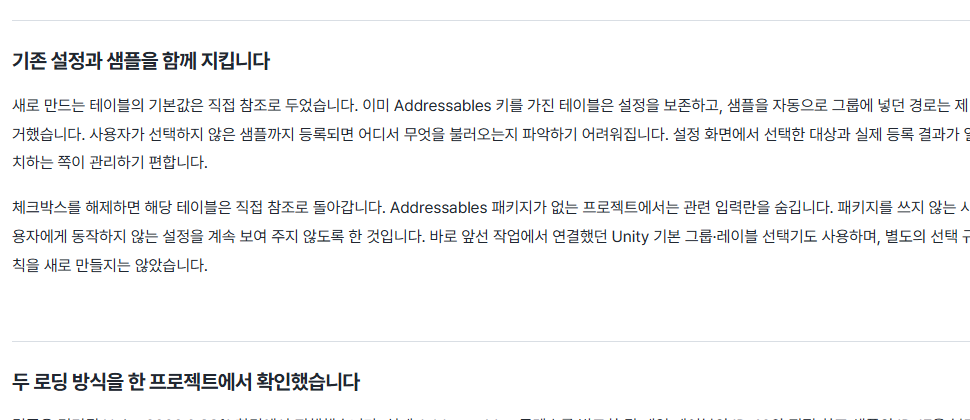
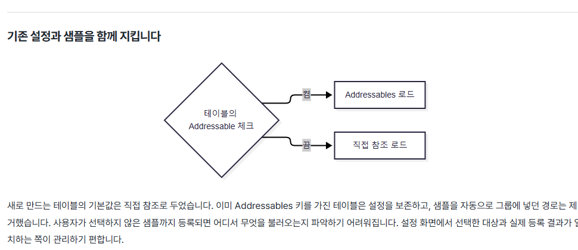
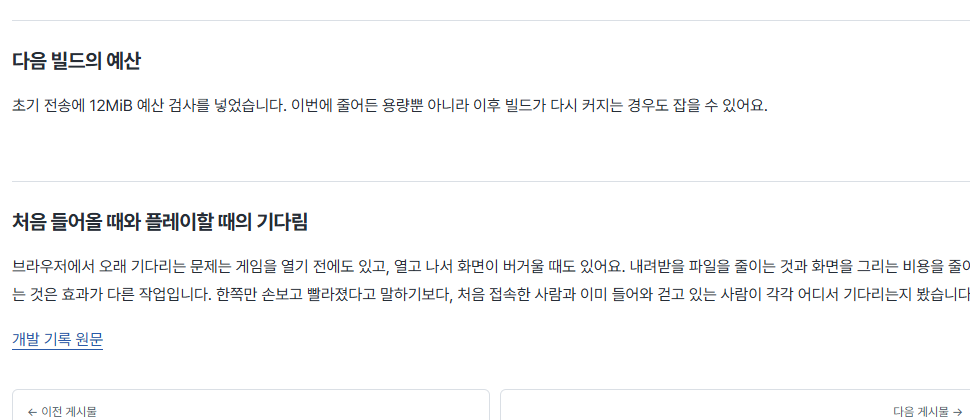
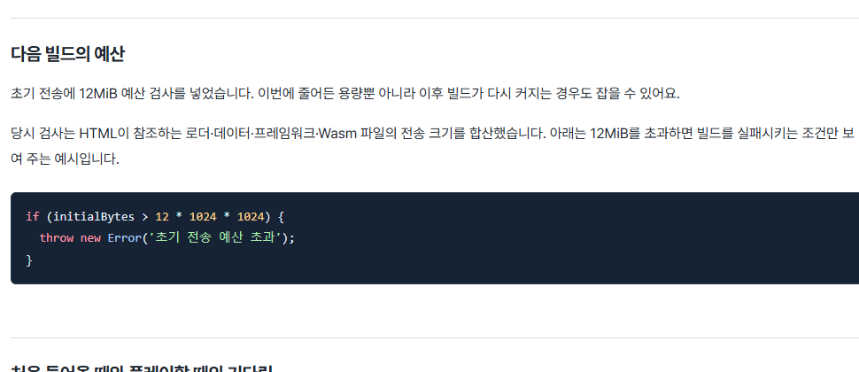

Tracefolio REPORTS & ISSUES
Tracefolio REPORTS & ISSUES개발일지 두 편에 로딩 분기와 예산 검사 추가
완료테이블별 로딩 선택을 Mermaid로 나타내고 웹 빌드의 전송 예산은 짧은 JavaScript 예제로 보여 줍니다.
작업 결과
개발일지 두 편을 블로그 main의 719afb8에 반영했습니다. 두 공개 페이지에서 도식과 구문 강조를 확인했습니다.
변경 내용
적용 내용
DDT 원고에는 Addressable 체크 여부에 따라 두 로딩 경로가 갈리는 그림을 추가했습니다. 수원 웹 빌드 원고에는 당시 12MiB 한도를 설명하는 예시를 한 블록 넣었습니다. 최신 원격 소스에 있던 highlight.js 빌드 설정을 그대로 사용했습니다.
글의 HTML에 Mermaid 펜스가 있을 때만 모듈을 연결합니다. 모듈은 브라우저에서 SVG 렌더링이 끝난 뒤 코드 블록을 도식으로 교체합니다.
const mermaidScript = articleBody.includes('<pre><code class="language-mermaid">')
? '<script type="module" src="/article-mermaid.js"></script>' : '';
대화 요약 · 사용자는 개발일지 갱신을 요청하고 “코드나 머메이드는 진짜 필요한 것들 간단하게 적용해줘”라고 범위를 정했습니다. Codex는 로딩 분기와 예산 검사 두 곳을 골랐고, 원격의 코드 강조를 재사용하는 결정과 블로그 푸시 결과를 알렸습니다. 발언별 시각은 미기록입니다.

테이블별 로딩 방식 전 · 설명 문단

테이블별 로딩 방식 후 · Addressables와 직접 참조로 갈리는 분기

수원 웹 빌드 예산 전 · 12MiB 설명 문단

수원 웹 빌드 예산 후 · 예산 초과 조건을 보여 주는 강조 코드
검증
미디어 4,656개의 SHA-256을 확인하고 154편의 HTML을 생성했습니다. 기존 배포 검사의 스크립트 허용 목록은 2963eaf에서 갱신했으며, 175개 페이지의 링크 오류가 0건이었습니다. 로컬 및 공개 Edge에서 SVG와 키워드 강조를 확인했습니다. 공개 페이지의 기존 이미지 10개와 근거 링크 3개는 HTTP 성공으로 확인했습니다. 공개 글의 수정 전후를 동일한 1280×900 뷰포트에서 캡처했습니다.
남은 사항
전역 지침은 검토 후 변경하지 않았습니다. 프로젝트 지침에 개발일지의 도식 사용 기준과 설명용 예시의 표기 기준을 추가했습니다.
작업 시간
- 제안 시간: 1~2분. 확인 시작 2026-11-10 17:42:29 KST.
- 실제로 완료된 시간: 11분 50초. 블로그 공개 본문 검증을 2026-11-10 17:54:19 KST에 기록했습니다.
- XERJ: 미사용 — Git, rg, Node 빌드, 헤드리스 Edge로 확인했습니다.